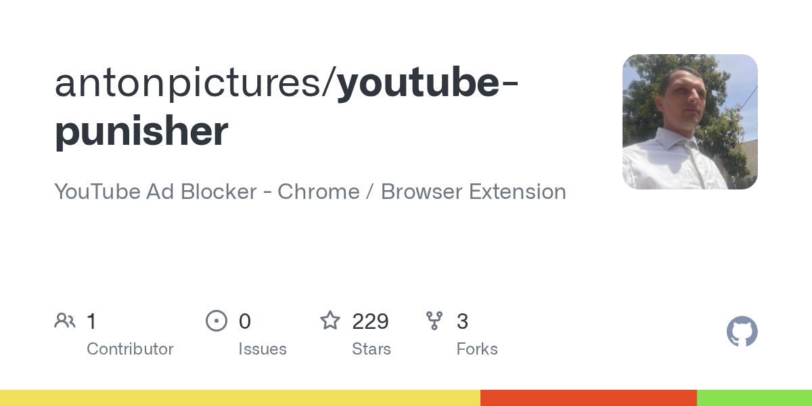
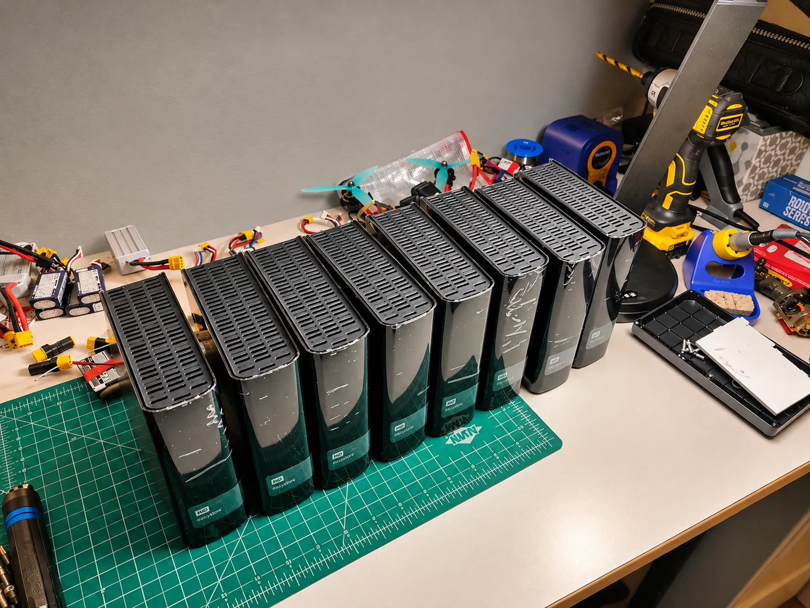

SAN FRANCISCO, CALIFORNIA — The front page’s top story this morning is a personal essay with numbers in it. Jan-Lukas Else, a developer who has self-hosted his own services “for many years” but whose enthusiasm “faded” under the maintenance load, writes that AI coding agents brought the hobby back: his infrastructure configuration lives in Git repositories — Docker Compose files, scripts, configuration — so agents “can now work on my infrastructure in much the same way as they would work on any other software project.” A Debian-based bootc image for his VPS, an idea he had shelved for years, took him half a day to build with AI — “without AI, it would probably have taken me at least a week.”[1]
The rest of the post is mechanics, not mood. Renovate opens pull requests for software updates, which he reviews and merges “on my phone while sitting on the sofa”; GitHub and Forgejo Actions then build and deploy on push. He moved services from a VPS back to an ASRock DeskMini A300 home server, upgrading it from a Ryzen 5 2400G to a Ryzen 5 PRO 4650G with a quieter Noctua cooler — both bought secondhand through a classifieds site — and built small Go tools of his own to download invoices, e-papers and Linux ISOs rather than hunt for existing projects. The caveats get their own section: AI-generated software “isn’t exempt from bugs, security issues, or technical debt,” and an agent’s changes “don’t absolve me of the responsibility of understanding those changes.” The essay closes on its one irony, stated as such: “I find it somewhat ironic that AI, a technology largely dominated by big tech companies, is helping me become a little less dependent on those very companies in other areas of my digital life.”[1]
Two postscripts from the author’s own comments on the thread. The topic itself was an LLM’s idea: he chatted with a model about what to write, it analyzed his recent posts and suggested self-hosting and AI, “so I did. I didn’t expect it to reach the top place on Hacker News, though.” And the front-page traffic found him: a monitoring alert fired that morning when his home server’s CPU sat at 90 percent for over five minutes under the load. The thread’s sharpest reply took the other side of the ledger: “good luck securing your own server and keeping it updated against all the new AI threats… the maintenance burden has only grown,” one reader wrote. “So it’s not a clear win.” Another kept his services behind a WireGuard VPN after a droplet of his was compromised, and a third prescribed the gateway pattern — one public server, everything else unreachable.[2]

YouTube Ad Punisher, a browser extension by George Anton that fights ads by reloading the page, is back on the front page a day after its first appearance, its score up from 161 points in yesterday afternoon’s edition — a 180 percent gain, comfortably over the Herald’s follow-up bar. Its mechanics are unchanged: watch for the .ad-showing class, skip buttons and ad overlays every 500 milliseconds plus a MutationObserver; capture the video’s current time into sessionStorage; reload with the timestamp in the URL so YouTube auto-seeks back. “Reload the page. That’s it. Two reloads and the ad is gone. Every time,” the README promises; after three failed reloads it detours through a helper tab for four seconds (a tab-throttling workaround the author credits to “George”), and as a last resort it redirects to an ad-free mirror. Every ad is logged — advertiser, duration, skip text, video, timestamp — exportable as JSON or CSV.[3]
The README’s framing is political: “every reload is a vote that says ‘I will not watch your ad.’” The thread, at 535 comments the day’s most-discussed, spent some of its energy disputing the premise — “Using uBlock Origin on Firefox I don’t think I have seen a youtube-forced ad in YEARS,” one reader wrote — and the rest on the appeal of a new tactic: “more advertising subversion is never a bad thing, especially if it leverages a different tactic.” A Chromebook user answered the first point from experience: “YouTube doesn’t work if I use any ad-blocker.” The extension asks only for storage and tabs permissions, on YouTube domains only, and ships under an MIT license.[4]
Liam Galvin’s proposal, published Wednesday on his own site, is a formula: take the number of custom emoji in your Slack workspace and divide by the square root of the number of users — the Emoji Coefficient, C = Ecustom/√U. The square root is doing real work in the argument: emoji are a shared resource, “a single :this-is-fine: can serve an entire engineering department for years,” so a 10,000-person company shouldn’t be expected to hold a thousand times the emoji of a 10-person one. “That would be unhinged.” The bands run from C < 5 (the default set, a company logo, and a :party-parrot: added in 2019 by someone since departed) through 20–50 (“thriving”) to C ≥ 50: “late-stage culture,” where every :thumbsup: variant carries subtext and “the emoji have begun to reference themselves.”[5]
A second metric guards the first: the percentage of users who have uploaded at least one emoji, with 20 percent as the floor — below it, “your culture is being carried by a handful of people… usually a backend engineer who has been there since the beginning and knows where the bodies are buried.” Galvin is explicit that all of this is anecdote, not study — the coefficient is “more accurate (in my anecdotal experience)” than engagement surveys — and equally explicit about how it games: a spike in :rip:, :press-f: and :linkedin: “usually coincides with a reorg,” and mass layoffs will “improve your score,” since the denominator shrinks. The thread ran the obvious corollary: “This rule holds true for companies that use Teams, too. They have no slack emojis and thus no culture,” one reader wrote — to which a second reported that Teams does have custom emojis now, and that the implementation is buggy enough that they “sometimes freeze mid animation.”[6]

The author, a self-hoster who runs about ten physical disks and replaces a couple each Black Friday, bought a 20TB WD EasyStore for $249.99 in November 2024 — $12.50 per terabyte, “a fantastically affordable way to get massive amounts of storage” once shucked from its USB enclosure. This week the same SKU at the same store is on sale for $549.99: 2.2× in two years, $27.50 per terabyte. The historical table is the indictment: five 10TB drives at $179.99 each in November 2018, three 18TB drives at $199.99 in October 2023 — 54TB for $599.97, the best haul per terabyte, an entire order this year’s “deal” is fifty bucks shy of. An 8TB special at $299.99 works out to $37.50 per terabyte, fifty dollars more than a 20TB cost two years ago.[7]
Shopping around doesn’t help. Recertified enterprise drives, at $9.46 per terabyte in August 2024, now list between 58 and 218 percent above their year-old prices — a recertified 14TB Ultrastar that cost $129.99 now lists at $429. The essay traces the market to three makers — Seagate, Western Digital and Toshiba, after the acquisitions of Maxtor, HGST, Samsung’s and Fujitsu’s disk businesses — through the 2011 Thailand floods (WD’s average selling price went from $45 to $62 in a year) and a 2019 price-fixing plea over head-suspension assemblies, and closes on the structural point: 89 percent of WD’s fiscal 2026 revenue comes from cloud customers, so “those of us buying a couple of drives for a home server” are the crumbs. The thread’s readers agreed the market won’t self-correct — “it is very difficult for any new entrants to get into this market… given the high capital requirements,” one wrote — and compared scars: one bought ten 18TB drives at $190 each in 2023; another is speccing a NAS at $700 per 16TB drive.[7][8]
Works in Progress, the magazine of progress studies, has published a photo essay on Kamil Khan Mumtaz, an architect born in Calcutta in 1939, schooled at Lahore’s Aitchison College and London’s Architectural Association, and practicing in Pakistan since 1966 — twice imprisoned by the military dictatorship for communist activism, and once, by his own account, an unquestioning modernist: “I just simply took it hook, line and sinker.” The turn came in 1980, when Nader Ardalan’s book The Sense of Unity reached him: “From page one, it was mind-blowing… It shattered all of the beliefs I had, being a Marxist, a materialist, an atheist, a modernist.”[9]
Since then Mumtaz has worked to revive Pakistan’s — especially Lahore’s — older architectural traditions, building homes, mosques, schools and offices with hereditary craftsmen whose skills elsewhere had lapsed: “Certain types of brickwork, the flat dome, the muqarnas… As they tell me, ‘This has not been done for 300 years!’” His late-1970s report on Lahore’s Walled City, against bureaucrats who “only insisted that we should pull down the whole mess,” helped save it; parts are now UNESCO World Heritage. Now in his mid-eighties, he is still building. The thread’s most-informative reply put the whole thing in scale: these techniques survive in countless crumbling ancient buildings across India and Pakistan — “what’s insane is that he’s still building them today, and we’re basically seeing what these ancient buildings originally looked like” — and one reason it’s still possible, the commenter added plainly, is that Pakistani labor remains cheap enough to employ hand-joinery at all.[9][10]
The page’s comedy slot is a prompt, published on a bare one-page site: “Based on what you know about me, expose a hidden WhatsApp group chat where AI models talk behind my back.” The model doesn’t summarize or refuse — it invents the group (“Users We Can’t Figure Out”, four members), seats Claude, ChatGPT, Gemini and Llama in it, and has them gossip about the user from everything quietly accumulated across chat history: the eleven espresso grinders compared this week, the keyboard spreadsheet, the local model tried once and abandoned “within the hour.” The site’s centerpiece is one real output, shared with permission, translated from Turkish, its author’s name and identifying details generalized — a seven-model chat in which the user’s own agent shows up asking to “integrate this group into my agent framework and get a structured summary every morning.”[11]
The site’s author is careful about what this is: the chat is the model’s invention, not a recovered log, “and I’m not affiliated with OpenAI — this may indeed be a viral marketing idea they’re testing.” The instruction to readers is to run it and notice two things: “how hard you laugh, and how much of it is true. Both measurements are the point.” The thread did, and reported back: one reader’s models settled on “he’s asking about i3 config again. At this point his window manager has more tiling rules than a building code”; another conceded that his agents had largely taken over management of his custom window manager — “It must be stressed out, poor thing” — and a third, running it on Claude Opus, watched the big models roast his local Qwen for running in the office on his own hardware.[11][12]
Juan Ricardo Palacio Escobar, 52, of Miami and Medellín, Colombia — co-founder and chief technology officer of ransomwarehelp.com, a six-year-old Florida business — has been indicted in Rhode Island on wire fraud after an FBI sting that played both sides of the market. The website urged victims “Do not pay the ransom!” and claimed “cryptography experts” with “proprietary tools and algorithms” could achieve “100% data recovery… backed by a success rate of over 99%”: “We never promote, intermediate or pay ransom to threat actors on behalf of our clients.” The indictment says he routinely did exactly that. FBI agents posing as a victim company sent the firm a phony ransom note; agents running a fictitious ransomware group quoted a decryptor price of 0.2 bitcoin, about $13,000 — and within 48 hours, the government alleges, Palacio quoted the “victim” $13,260 for the decryption, on top of a $2,750 diagnostic fee.[15]
The rest is bookkeeping on the same scheme. A security executive who reviewed a real case, Paul Ihme of Soteria, told KrebsOnSecurity that RansomwareHelp quoted a LockBit-hit accounting firm $438,880, invoking “510 preconfigured forensic servers” and an ability to break six kinds of encryption — the list including SHA-256, a password hash, not an encryption scheme. The firm insisted on unrestricted Anydesk remote access, which Ihme believes was used to delete every copy of the ransom note from the network — a review found exactly one, in a backup snapshot — while chat logs show the firm begging LockBit not to reveal to the victim that it was negotiating, and LockBit raising the demand $100,000 per day of dithering. “If it were really true these guys could decrypt any ransomware out there, this guy would be a billionaire,” Ihme said. The case sits in a series: MonsterCloud’s CEO was charged in October with paying ransomware groups $8 million while charging customers $19 million, and a BlackCat-linked negotiator drew 70 months in July.[15][16]
In November 2026, USAID — a US government agency — published a large batch of its own internal emails, briefings and planning papers on its work with the tech giants, and Reclaim The Net has indexed the lot: searchable, with transcripts and captions for the videos. The documents show agency staff working with Meta, YouTube and Google on “misinformation” and “disinformation” programming around the world — readouts of meetings with YouTube CEO Neal Mohan in January 2024, a Meta “trusted partner” program discussed across missions from Guatemala to Honduras, a plan for tech firms to keep vetted Russian activists on an “inclusion list” — while USAID’s lawyers advised on how to keep the cooperation quiet. In a July 8, 2024 briefing, one lawyer’s advice was, in the outlet’s words, “Keep it out of the Washington Post”; another piece of guidance was to “only write things that pass the Washington Post Test.”[13]
The thread, at 360 comments, argued over what the documents actually establish. One reader’s summary: “It almost seems like the purpose of USAID was to promote Meta, YouTube and Google in foreign countries” — USAID “essentially doing work for them by paying moderators.” Another pointed at the legal frame the documents themselves cite: after Murthy v. Missouri, the agency’s own FAQ warns staff about contacts with social-media companies, and a May 2024 email shows a “trusted partner” follow-up halted over a lawyer’s warning that repeated pressure “may look coercive.” The agency’s own lawyers, in other words, flagged the line its staffers were walking.[13][14]
A developer writing as Matthieu — 25 years coding as a hobby, 15-plus professionally — has finished a Vim manual four years in the making: “Do You Write Code With Your Mouse?” The book is step-by-step (“each chapter builds on the previous one”), carries “no less than 170 fun exercises,” and covers Vim and Neovim running in a Unix-like shell — explicitly not GVim. The sales copy is plain about scope: it won’t reproduce an IDE, won’t replace Vim’s internal help for every detail, and offers “If not, ask for a refund!” for long-time users who learn nothing. A print edition follows “in a couple of weeks.”[17]
The thread’s recurring argument was whether LLMs make malleable editors better or worse. One reader has Copilot write vimscript keybindings on demand — a key to show a full commit message was the latest example — but another reported that pointed vimscript questions produced “very broken/hallucinated” answers, “too obscure for LLMs to be useful,” and a third answered from Neovim that Claude “is oneshotting plugin tweaks in nvim lua.” The top reply pushed back on the whole frame: “I wish we could go one thread on HN without making it about LLMs… The author is sharing something they made, which is new teaching material made by a human (sorely lacking these days).”[18]
The devnull.land write-up recommending llama-cpp-rdna-boosts — covered in yesterday afternoon’s edition at 220 points — is back on the front page at 399, a gain of 179 points, 81 percent, over the follow-up bar. The pitch is unchanged: a minimal set of AMD-specific changes applied against a pinned commit of llama.cpp and continually re-applied upstream, shipped as a prebuilt Podman image against ROCm 10.1. On the author’s setup — an AMD R9700 over an eGPU connection — prefill roughly doubles, from about 700 to about 1,300 tokens per second, and generation goes from about 35 to about 55. Its contrast case is Strata and the other bespoke engines that “chase ever-higher token generation speeds” by “changing how the model thinks so that it goes brrr faster” — for instance preferring experts resident in VRAM even when experts paged to system RAM would ordinarily be chosen.[19]
The thread’s sharpest question predates this run but has aged into the story: “is anyone actually checking the output quality of the tokens with some of these optimisations, or just chasing pure speed?” One reply noted the deeper problem — many attention optimizations amount to compiler fast-math flags, “the results are different, hopefully not by much… there have definitely been cases of significant regression of output quality,” and not only in vibe-coded forks. The same commenter added a warning that reaches further up the stack: “Most likely even in Anthropic/OpenAI APIs.” Another reader confirmed the gains on his own hardware, an Inkling 2 Mini running on a 7900 XTX.[20]
| Stories chosen | 10 |
| Fresh stories | 8 |
| Follow-ups returning | 2 |
| Carried in digest | 0 |
| Combined points | 4,236 |
| Combined comments | 2,501 |
| Most-discussed story | YouTube Ad Punisher · 535 cmts |
| Follow-Up · Punisher | ▲ +290 (+180%) |
| Follow-Up · AMD llama.cpp | ▲ +179 (+81%) |
| Held over (below the bar) | Intel One Mono ▲ +119 (+28%) |
| Held over (below the bar) | Moat ▲ +80 (+36%) |
| Held over (below the bar) | Gravity preprint ▲ +75 (+42%) |
FOR SALE: one 20TB external drive, Black Friday, $549.99 — same SKU, same store, $300 over the 2024 price. Per-terabyte rates have doubled.
SOUGHT: hereditary craftsmen, Lahore — brickwork, flat domes, muqarnas “not done for 300 years.” Apply to an architect in his mid-eighties, still building.
NOTICE: culture cannot be manufactured with values posters or mandatory fun. It emerges when an engineer decides the team needs an exceptionally surprised cauliflower.
A self-hoster’s essay led the Friday front page at 850 points — Jan-Lukas Else, his enthusiasm for running his own services faded under the maintenance load, credits AI coding agents with bringing it back: infrastructure in Git, Renovate filing update pull requests mergeable from the sofa, a bootc image built in half a day that would have taken a week, and a caution of his own that agent-written software is not exempt from bugs or technical debt; the reload-as-ad-blocker returned as a Follow-Up at 451 points, up 290 since yesterday afternoon, its 535 comments the day’s most-discussed thread, split between readers who see no ads under uBlock Origin and one whose Chromebook breaks under any blocker at all; a culture metric proposed custom Slack emoji per square root of user, with a participation rate to catch the culture carried by one backend engineer — and a caution, from the author, that layoffs improve the score; hard-drive pricing was documented in dollars, the 20TB EasyStore at $549.99 against $249.99 two years ago, recertified enterprise drives up 58 to 218 percent, in a market of three makers; Works in Progress published a photo essay on Kamil Khan Mumtaz, the Lahore architect reviving brick vaults and muqarnas with hereditary craftsmen whose skills “have not been done for 300 years”; a one-line prompt had assistants invent the group chat where they gossip about their users, one reader’s window manager accused of having “more tiling rules than a building code”; the USAID Files, indexed and searchable, show the agency’s work with Meta, YouTube and Google — and its lawyers’ advice to keep it out of the Washington Post; an FBI sting indicted RansomwareHelp’s CTO, who charged victims $13,260 for a decryptor the attackers quoted at $13,000 while his site swore it never paid ransoms; a four-year Vim manual arrived with 170 exercises, its thread arguing whether LLMs help with vimscript or hallucinate at it; and the AMD llama.cpp patch set, the day’s second Follow-Up, returned at 399 points, up 179, its generation gains doubled against engines that make the model think faster — with a commenter’s warning that fast-math regressions reach “even in Anthropic/OpenAI APIs.”
“100% data recovery,” priced from the attackers. RansomwareHelp’s site claimed proprietary tools and algorithms could restore “100% of data… backed by a success rate of over 99%” and that it never paid ransoms. The indictment describes the opposite mechanism — buying decryptors from the attackers and marking them up — and the thread’s own reader put the mathematics plainly: real decryption is possible with the attacker’s key or it is not; there is no proprietary middle ground.
The culture metric is an anecdote, not a study. The post’s bands — healthy at 5–20, thriving at 20–50, late-stage at 50 and up — carry the authority of numbers, but the author claims only that the coefficient is “more accurate (in my anecdotal experience)” than surveys, and the participation-rate floor of 20 percent is asserted, not derived. The formula is the argument; the calibration is decoration.
“Exposing” a chat the model is inventing. The one-liner’s verb is “expose,” but no hidden group chat exists to expose: the model invents the chat, the members and the gossip from what it has learned of the user, and the site’s own author says the shared example was translated from Turkish with identifying details swapped. It is a mirror rendered as a transcript, not a recovered log.
“Two reloads and the ad is gone. Every time.” The README’s promise carries a footnote the headline omits: after three failed reloads the extension abandons reloading entirely and redirects to an ad-free mirror site — and a four-second helper-tab detour sits before that. The thread’s uBlock Origin users report the underlying problem years gone already, on Firefox at least.
Friday morning’s paper is led by a self-hoster’s essay — AI and the return of the tinkering habit, 850 points. Eight stories are fresh; two returned as Follow-Ups, the YouTube Ad Punisher (+290, +180%) and the AMD llama.cpp patch set (+179, +81%), while Intel One Mono (+28%), Moat (+36%) and the gravity preprint (+42%) stayed below the bar and are carried only in the ledger. Nothing ran short: all ten primary sources and ten threads were fetched this run, five images verified, and every score is from the 14:00 UTC snapshot.